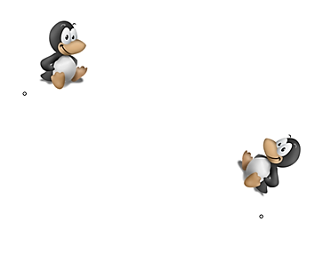
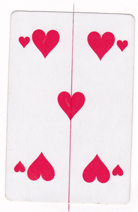
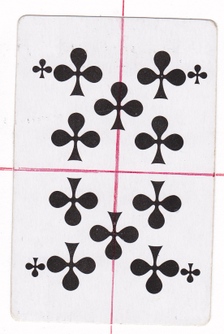
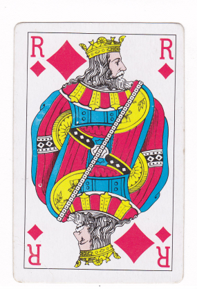

Définition :
Deux figures sont symétriques par rapport à une droite (d) si ces deux figures se superposent par pliage le long de cette droite.
Exemple : Les deux pingouins ci-dessous sont symétriques par rapport à la droite (d).

2) Axe de symétrie d'une figure
Définition :
Une droite (d) est un axe de symétrie d'une figure, si les deux parties de la figure se superposent par pliage le long de la droite (d).
Exemple : Voici trois figures. Observer leur(s) axe(s) de symétrie.

ℱ₁ a 1 axe de symétrie

ℱ₂ a 2 axes de symétrie

ℱ₃n'a pas d'axe de symétrie
II. Construction du symétrique d'un point
Définition :
On dit que deux points A et A' sont symétriques par rapport à une droite (d) lorsque :
le segment [AA'] est perpendiculaire à (d),
A et A' sont à égale distance de (d).
La droite (d) est appelée axe de symétrie.
Propriété :
Dire que A' est le symétrique du point A par rapport à la droite (d) revient à dire que la droite (d) est la médiatrice du segment [AA'].
Remarque : Si le point A se trouve sur la droite (d), alors A et son symétrique A' sont confondus.
Exemple :
A' est le symétrique de A par rapport à (Δ).
B appartient à la droite (Δ) : son symétrique par rapport à (Δ) est lui-même.
1) Construction avec l'équerre et le compas
Méthode : Pour construire le symétrique du point M par rapport à la droite (d) :
Je place un côté de l'angle droit de l'équerre le long de (d), puis je fais glisser l'équerre jusqu'à ce que l'autre côté passe par M.
Je trace la perpendiculaire à (d) passant par M. Elle coupe (d) en O.
Sur cette perpendiculaire, je place M' tel que OM = OM' à l'aide du compas.
2) Construction avec le compas seulement
Méthode : Pour construire le symétrique du point M par rapport à la droite (d) au compas seulement :
Je place deux points A et B sur (d).
Je trace un arc de cercle de centre A passant par M.
Je trace un arc de cercle de centre B passant par M.
Les deux arcs se coupent en M', symétrique de M par rapport à (d).
III. Construction du symétrique d'une figure
Méthode : Pour tracer la figure symétrique d'une figure donnée, on choisit plusieurs points de cette figure (sommets, centre…) et on trace le symétrique de chacun de ces points par rapport à l'axe, avec la méthode de son choix.
1) Symétrique d'un polygone
Exemple : Construire l'image A'B'C' du triangle ABC par la symétrie d'axe (d).
On construit les images A', B' et C' de chaque sommet, puis on relie ces points.
Les figures F₁ et F₂ sont symétriques par rapport à (d).
2) Symétrique d'un cercle
Méthode : Pour construire le symétrique d'un cercle de centre O par rapport à (d),
on construit d'abord l'image O' du centre O.
Le cercle symétrique a pour centre O' et a le même rayon.
Exemple :
Les cercles (C) et (C') ont le même rayon.
Les centres O et O' sont symétriques par rapport à (d).
IV. Propriétés de la symétrie axiale
Propriétés :
La symétrie axiale conserve :
les longueurs : le symétrique d'un segment est un segment de même longueur ;
les angles : deux angles symétriques ont la même mesure ;
l'alignement : les symétriques de points alignés sont des points alignés ;
les cercles : le symétrique d'un cercle est un cercle de même rayon ;
l'aire : deux figures symétriques ont la même aire.
Exemple :
Les triangles ABC et A'B'C' sont symétriques par rapport à la droite (d).
Le triangle ABC est rectangle en B. Quelle est la nature du triangle A'B'C' ?
Les angles ABC et A'B'C' sont symétriques par rapport à (d), donc ils ont la même mesure.
Or ABC = 90°, donc A'B'C' = 90°.
Un triangle qui possède un angle droit est un triangle rectangle.
On en déduit que le triangle A'B'C' est rectangle en B'.